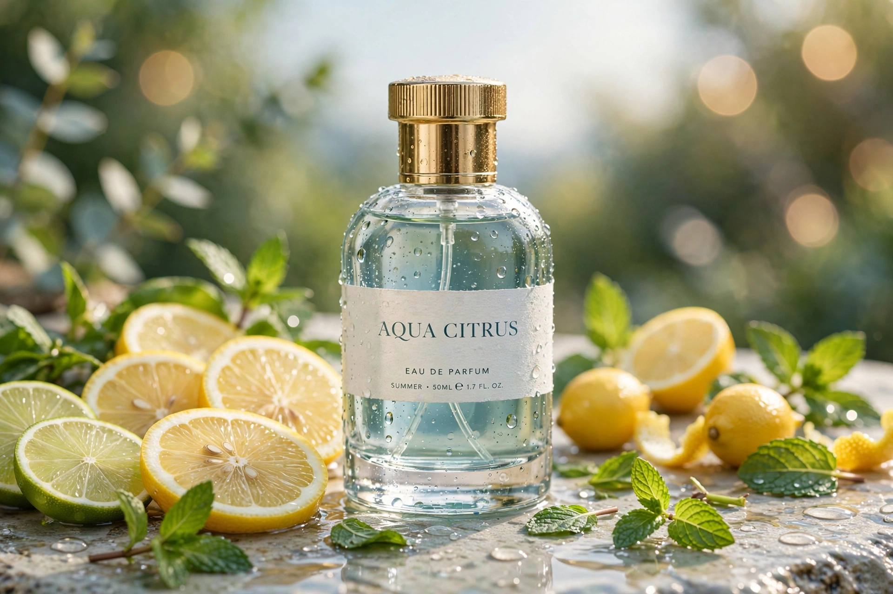

Guía de perfumes
Los mejores perfumes según la estación
Cada estación cambia las reglas del perfume: lo que brilla en agosto puede desaparecer en enero. Esta es la guía para vestir tu aroma durante todo el año.

El clima no solo decide qué ropa usas: también decide cómo se comporta tu perfume. El calor amplifica la proyección y evapora las notas ligeras, mientras el frío apaga los aromas y pide fragancias con más cuerpo. Por eso los amantes de los perfumes rotan su armario con las estaciones, igual que hacen con el closet.
No necesitas una colección enorme para hacerlo bien. Con entender qué familia olfativa pide cada estación, dos o tres frascos bien elegidos te cubren cada temporada. Vamos estación por estación.
Primavera: el renacer
La primavera pide ligereza con optimismo. Después del invierno, la nariz quiere aire, flores y verde: fragancias luminosas que acompañen los días más largos sin resultar pesadas.
Lo que funciona
- Florales frescos: peonía, flor de azahar, lirio o rosa ligera. Flores que se sienten como pétalos, no como un ramo denso.
- Verdes: hoja de violeta, té verde, hierba cortada o higo verde. Aportan una frescura serena, distinta a la chispa de los cítricos.
- Cítricos suaves: bergamota o mandarina en versiones delicadas, perfectas para las mañanas de primavera.
- Un punto frutal: pera, melocotón blanco o frutos rojos ligeros dan un toque alegre sin empalagar.
Lo que conviene evitar
Guarda todavía los orientales densos y las vainillas pesadas: a 20 grados empiezan a resultar opresivos. La primavera es transición, no el momento de las bombas invernales ni de los frescos extremos del verano.
Verano: la frescura manda
El verano es la temporada más exigente. El calor multiplica la proyección, el sudor altera las notas y una fragancia densa que en diciembre resulta acogedora, en agosto puede volverse agobiante. Aquí, menos es más.
Lo que funciona
- Cítricos: bergamota, limón, pomelo o mandarina. Una chispa luminosa que se siente como un vaso de agua fría.
- Acuáticos y marinos: recrean la brisa del mar o el aire después de la lluvia. Limpios, modernos y muy versátiles.
- Nerolí y azahar: la flor del naranjo amargo es quizá la nota veraniega más elegante: floral, cítrica y verde a la vez.
- Té verde y hierbas: albahaca, salvia o romero aportan frescura serena, ideal si buscas algo fresco pero sofisticado.
Errores comunes en verano
- Usar tu perfume de invierno: ese oriental denso que adoras en enero se vuelve opresivo a 35 grados.
- Aplicar de más: el calor multiplica la proyección; en verano, dos pulverizaciones suelen bastar donde en invierno usabas cuatro.
- Ignorar el sol: algunos cítricos pueden manchar la piel con el sol directo. Evita aplicar en zonas expuestas si pasarás horas al sol.
- Guardar mal los frascos: el calor y la luz degradan el perfume. Guarda tus frascos en un lugar fresco y oscuro, nunca en el coche.
Otoño: la transición cálida
El otoño es el puente entre la ligereza del verano y la profundidad del invierno. El aire se enfría, las noches se alargan y la nariz empieza a pedir calidez: es la temporada de los perfumes "acogedores".
Lo que funciona
- Amaderados cálidos: cedro, sándalo o vetiver. Elegantes y versátiles, funcionan de la oficina a la cena.
- Especias suaves: canela, cardamomo o nuez moscada en dosis moderadas: calidez sin el peso del invierno.
- Gourmand ligeros: un toque de vainilla, haba tonka o caramelo suave. Dulzor acogedor, sin empalagar.
- Cuero suave: las notas de cuero ligero aportan carácter y sofisticación, perfectas para las noches de otoño.
El momento de rescatar
Esos perfumes que en verano guardaste por "demasiado intensos" vuelven a la rotación en otoño. Si un amaderado te parecía pesado en agosto, pruébalo de nuevo en octubre: el mismo perfume se comporta de forma muy distinta con diez grados menos.
Invierno: el abrazo cálido
El frío apaga la proyección: las moléculas del perfume se mueven más lento y la nariz las percibe menos. Por eso el invierno pide fragancias con cuerpo, de esas que se sienten como un abrigo.
Lo que funciona
- Orientales: ámbar, incienso o mirra. Profundos y envolventes, hechos para el frío.
- Vainilla y gourmand densos: vainilla, haba tonka, chocolate o café. Dulzor cálido que el frío equilibra a la perfección.
- Oud y pachulí: intensos y con carácter, rinden al máximo cuando la temperatura baja.
- Especias cálidas: clavo, canela o pimienta. Aportan una calidez casi física en los días más fríos.
La única temporada de las "bombas"
El invierno es el momento de esos perfumes potentes que el resto del año resultan excesivos. Aprovecha: aplica con generosidad, porque el frío se encargará de domar la proyección por ti.
Cómo rotar tu armario por estaciones
No necesitas cuatro colecciones separadas. La mayoría de los perfumes sirven en dos estaciones vecinas: un floral fresco va de primavera a verano, y un amaderado suave, de otoño a invierno. Con dos o tres frascos por estación —algunos compartidos— cubres el año entero.
- Cambia como el closet: cuando guardes la ropa de la temporada, rota también los perfumes. Es el recordatorio perfecto.
- Mezcla entre estaciones: el layering alarga la vida de tus perfumes. Un cítrico de verano sobre una base de almizcle funciona en primavera; un toque de vainilla sobre un amaderado de otoño lo lleva al invierno.
- Prueba en clima real: un perfume que huele perfecto en la tienda con aire acondicionado puede comportarse muy distinto a pleno sol o con frío. Decide siempre después de probarlo en tu piel y en el clima de verdad.
- Guárdalos bien todo el año: lugar fresco, oscuro y seco. El calor y la luz degradan cualquier perfume, sea de la estación que sea.
Y recuerda: la mejor guía es tu propia nariz. Estas son las reglas generales, pero si un "perfume de invierno" te hace feliz en julio, úsalo con moderación y disfrútalo. El perfume, al final, es para quien lo lleva.
¿Quieres la recomendación perfecta cada mañana?
Aromario organiza tu colección y te sugiere el perfume ideal según el clima y tu plan del día. Gratis para Android.
Conocer Aromario